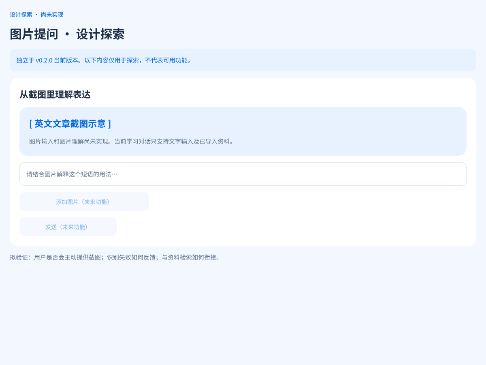
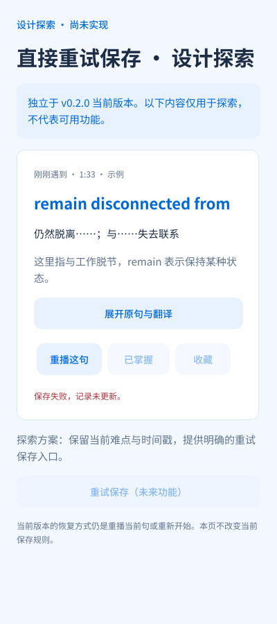

设计探索 · 未实现
独立范围 · 示例内容以下两张画板位于原生 Figma 的“03 · 设计探索”，未计入 v0.2.0 当前能力。图片和文字为设计示例。
图片提问
未来允许上传截图并围绕图中的表达提问；仍需补充格式、大小、清晰度、隐私、模型消息和失败处理。

保存失败直接重试
当前通过重播或重新开始恢复。未来探索提供幂等重试按钮，避免原句和学习记录重复；本页不执行保存。

本页使用原生 Figma SVG 导出；未来动作保持禁用，不调用模型或真实上传。